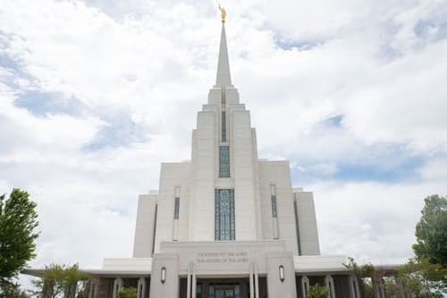

Temple Album
Home
Old
New
Large
Small
Temple Gallery

Aba Nigeria Temple
Accra Ghana Temple
Salt Lake Temple
Rome Italy Temple
Tokyo Japan Temple
Paris France Temple
Sydney Australia Temple
Johannesburg South Africa Temple
Madrid Spain Temple